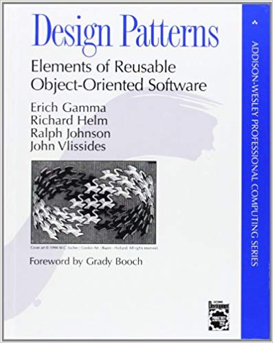
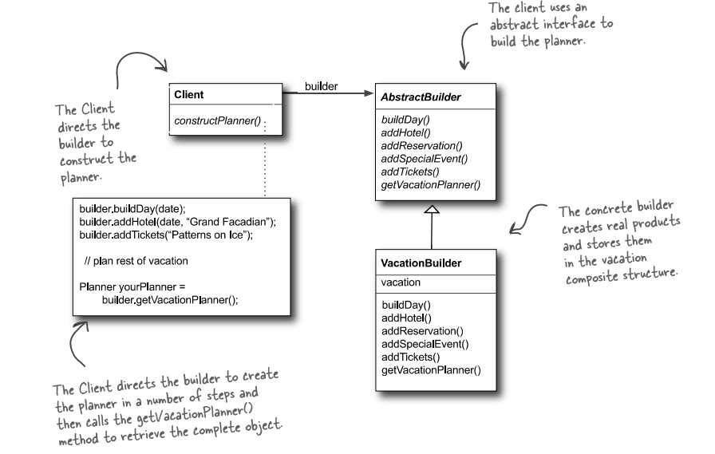
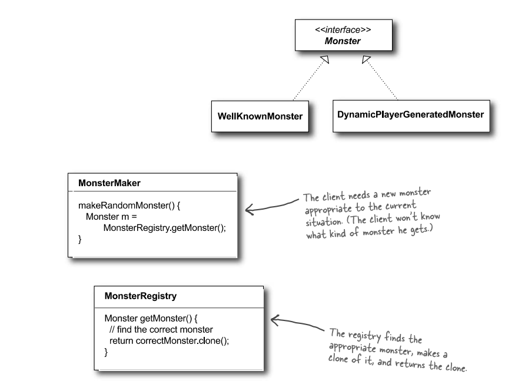
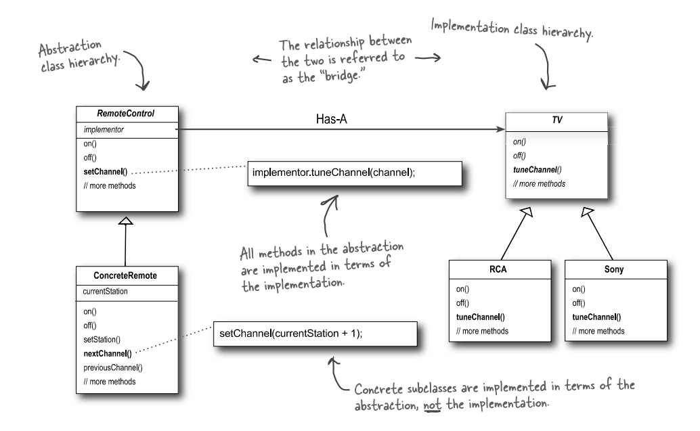
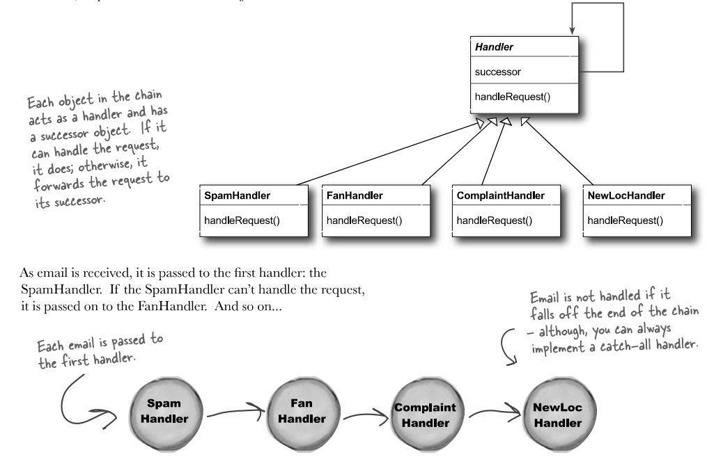

Trường ĐH Công nghệ – Đại học Quốc gia Hà Nội
Từ nguyên lý đến lời giải quen thuộc.
Những vấn đề này đã có lời giải quen thuộc — đó là pattern.
Mỗi bài toán có nhiều yêu cầu kéo theo đánh đổi:
Pattern tốt giúp cân bằng các yêu cầu đó, thay vì tối ưu một mặt rồi làm hỏng mặt khác.
Kết luận: Không phải pattern — đây là mẹo tạm, không tổng quát và càng dùng càng khó bảo trì.
Một pattern thường được mô tả qua các phần sau:

| Nhóm | Mục tiêu | Số lượng |
|---|---|---|
| Creational | Tách biệt logic tạo đối tượng. | 5 mẫu |
| Structural | Lắp ráp đối tượng thành cấu trúc lớn. | 7 mẫu |
| Behavioral | Phối hợp hành vi, giao tiếp và luồng điều khiển. | 11 mẫu |
| Pattern mức lớp | Pattern mức đối tượng |
|---|---|
| Dựa nhiều vào kế thừa. | Dựa nhiều vào thành phần. |
| Ít linh hoạt hơn, thường cố định sớm. | Linh hoạt hơn, dễ thay đổi lúc chạy. |
Phần lớn GoF pattern thuộc mức đối tượng.
Pattern có ở nhiều lĩnh vực:
| Nguyên lý | Pattern thường hỗ trợ |
|---|---|
| SRP | Command, Strategy |
| OCP | Strategy, Decorator, Observer |
| LSP | Template Method, Strategy |
| ISP | Facade, Adapter |
| DIP | Factory, Command, Strategy |
Ngoài SOLID, nguyên tắc "ưu tiên composition hơn inheritance" (GoF) cũng hiện rõ ở Decorator, Bridge, Composite, Flyweight.
constructor để private: chặn việc tạo trực tiếp từ bên ngoài.
class DatabaseConnection {
private:
DatabaseConnection() {
std::cout << "Kết nối tới Database...\n";
}
public:
DatabaseConnection(const DatabaseConnection&) = delete;
DatabaseConnection& operator=(const DatabaseConnection&) = delete;
static DatabaseConnection& getInstance() {
static DatabaseConnection instance;
return instance;
}
};
// Client:
auto& db1 = DatabaseConnection::getInstance();
auto& db2 = DatabaseConnection::getInstance(); // Cùng đối tượng
| Factory Method | Abstract Factory | |
|---|---|---|
| Tạo gì? | Một sản phẩm | Cả bộ sản phẩm tương thích |
| Ai quyết định? | Lớp con override phương thức | Factory object riêng |
| Ví dụ | Chi nhánh HN pha phin, chi nhánh SG pha sữa đá |
Nội thất Modern → ghế + bàn Modern Nội thất Classic → ghế + bàn Classic |
Lớp con quyết định pha loại cà phê nào — client chỉ gọi serve().
class CoffeeShop {
public:
virtual Coffee* brew() = 0; // factory method
void serve() {
Coffee* c = brew();
c->prepare();
c->pour();
}
virtual ~CoffeeShop() = default;
};
class HanoiShop : public CoffeeShop {
public:
Coffee* brew() override { return new CaPhePhin(); }
};
class SaigonShop : public CoffeeShop {
public:
Coffee* brew() override { return new CaPheSuaDa(); }
};
// Client: shop->serve() — không cần biết pha kiểu gì
Factory tạo cả bộ — ghế và bàn luôn cùng phong cách.
class FurnitureFactory {
public:
virtual Chair* createChair() = 0;
virtual Table* createTable() = 0;
virtual ~FurnitureFactory() = default;
};
class ModernFactory : public FurnitureFactory {
public:
Chair* createChair() override { return new ModernChair(); }
Table* createTable() override { return new ModernTable(); }
};
class ClassicFactory : public FurnitureFactory {
public:
Chair* createChair() override { return new ClassicChair(); }
Table* createTable() override { return new ClassicTable(); }
};
// Client dùng FurnitureFactory* — bộ sản phẩm luôn tương thích
Fluent interface: gọi nối tiếp theo từng bước.
// Tạo Pizza mà không cần truyền 10 tham số vào Constructor
Pizza myPizza = Pizza::Builder("Large") // Bắt buộc
.addCheese() // Tùy chọn
.addPepperoni()
.addBacon()
.build(); // Tạo thành phẩm
std::cout << myPizza.getDescription() << '\n';
Lợi ích: tránh constructor quá dài.


Client gọi clone() thay vì new — không cần biết lớp cụ thể.
| Pattern | Mục đích |
|---|---|
| Adapter | Đổi interface. (Bộ chuyển điện) |
| Decorator | Gắn thêm hành vi. (Topping trà sữa) |
| Facade | Che hệ thống phức tạp. (Nút bật rạp phim) |
| Proxy | Kiểm soát truy cập. (Bảo vệ canh cổng) |
Hệ thống mới cần JSON, thư viện cũ chỉ có XML — Adapter dịch giữa hai bên.
// 1. Hệ thống cũ trả về XML
class OldLibrary {
public:
std::string getXmlData() const { return "100"; }
};
// 2. Hệ thống mới chỉ nhận JSON
class NewInterface {
public:
virtual std::string getJsonData() const = 0;
virtual ~NewInterface() = default;
};
// 3. Adapter: cắm "2 chấu" vào "3 chấu"
class XmlToJsonAdapter : public NewInterface {
private:
OldLibrary oldLib;
public:
std::string getJsonData() const override {
std::string xml = oldLib.getXmlData();
return convertXmlToJson(xml);
}
};
Bọc lớp này lên lớp kia — mỗi lớp bọc thêm hành vi.
// Lõi: chỉ là Espresso thuần
auto myDrink = make_shared<Espresso>();
cout << myDrink->cost() << "k\n"; // 20k
// Bọc thêm Sữa
myDrink = make_shared<MilkDecorator>(myDrink);
cout << myDrink->cost() << "k\n"; // 25k
// Bọc thêm Trân châu
myDrink = make_shared<BobaDecorator>(myDrink);
cout << myDrink->cost() << "k\n"; // 30k
// Lõi Espresso không thay đổi; cost() được cộng dồn từ ngoài vào
Decorator kế thừa cùng interface với đối tượng gốc, đồng thời giữ tham chiếu tới nó.
class Beverage {
public:
virtual int cost() const = 0;
virtual ~Beverage() = default;
};
class Espresso : public Beverage {
public:
int cost() const override { return 20; }
};
// Decorator giữ tham chiếu tới Beverage bên trong
class BeverageDecorator : public Beverage {
protected:
shared_ptr<Beverage> inner;
public:
BeverageDecorator(shared_ptr<Beverage> b) : inner(b) {}
};
class MilkDecorator : public BeverageDecorator {
public:
using BeverageDecorator::BeverageDecorator;
int cost() const override { return inner->cost() + 5; }
};

Abstraction và Implementation thay đổi độc lập — nối nhau qua composition.
Subject giữ danh sách Observer; khi thay đổi, tự động thông báo tất cả.
class YoutubeChannel { // Subject
private:
std::vector<Subscriber*> subs;
public:
void subscribe(Subscriber* s) { subs.push_back(s); }
void uploadVideo(const std::string& title) {
for (Subscriber* s : subs)
s->update(title); // Thông báo tất cả Observer
}
};
// Client:
YoutubeChannel channel;
UserA userA; UserB userB;
channel.subscribe(&userA);
channel.subscribe(&userB);
channel.uploadVideo("Review iPhone 15");
// → userA.update() và userB.update() đều được gọi
Nhớ bài 6: DiscountCalculator dùng if/else cho mỗi loại giảm giá — thêm loại mới phải sửa code cũ.
| Strategy | State |
|---|---|
| Client chọn thuật toán từ bên ngoài. | Hành vi tự đổi theo trạng thái bên trong. |
| cart.setStrategy(new MomoPayment()) | NoMoneyState → HasMoneyState → SoldOutState |
Chốt: Strategy — client quyết định; State — đối tượng tự quyết định.
Đóng gói thuật toán để thay chiến lược dễ dàng.
// 1. Interface chung cho thuật toán thanh toán
class PaymentStrategy {
public:
virtual void pay(int amount) = 0;
virtual ~PaymentStrategy() = default;
};
class MomoPayment : public PaymentStrategy { ... };
class VisaPayment : public PaymentStrategy { ... };
// 2. Context: Giỏ hàng
class ShoppingCart {
private:
PaymentStrategy* strategy = nullptr;
public:
void setStrategy(PaymentStrategy* s) {
strategy = s;
}
void checkout(int amount) {
strategy->pay(amount); // Chạy thuật toán đã lắp
}
};
Đóng gói yêu cầu thành đối tượng — cho phép undo/redo.
// 1. Interface lệnh
class Command {
public:
virtual void execute() = 0;
virtual void undo() = 0;
virtual ~Command() = default;
};
// 2. Lệnh cụ thể: bật đèn
class TurnOnLightCommand : public Command {
Light& light;
public:
TurnOnLightCommand(Light& l) : light(l) {}
void execute() override { light.turnOn(); }
void undo() override { light.turnOff(); }
};
// 3. Invoker: remote điều khiển
class RemoteControl {
std::stack<Command*> history;
public:
void pressButton(Command* cmd) {
cmd->execute();
history.push(cmd); // Lưu để undo
}
void pressUndo() {
if (!history.empty()) {
history.top()->undo();
history.pop();
}
}
};

Mỗi handler xử lý hoặc chuyển tiếp — client không cần biết ai xử lý.
| Mẫu | Khi nghĩ đến | Lưu ý |
|---|---|---|
| Interpreter | Ngôn ngữ đơn giản, DSL nhỏ | Dễ sinh nhiều lớp |
| Mediator | Nhiều đối tượng giao tiếp chéo | Gom logic điều phối vào trung gian |
| Memento | Undo, save game, snapshot | Giữ trạng thái mà không phá đóng gói |
| Visitor | Thêm thao tác mới trên cấu trúc ổn định | Dễ làm lộ chi tiết bên trong |
| Iterator | Duyệt tập hợp mà không lộ cấu trúc bên trong | C++ STL dùng rộng rãi |
| Template Method | Khung thuật toán cố định, lớp con cài chi tiết | Giữ hợp đồng LSP giữa cha/con |
K.I.S.S (Keep It Simple, Stupid): giữ thiết kế đơn giản.
Nếu câu 4 trả lời "còn đủ dùng" — chưa cần pattern.
| Nên dùng khi | Chưa nên khi |
|---|---|
| Giải pháp đơn giản không đủ. | Vấn đề vẫn chưa lặp lại đủ rõ. |
| Điểm mở rộng đã rõ. | Dễ sinh quá nhiều lớp. |
| Đang tái cấu trúc code smell (dấu hiệu thiết kế có vấn đề). | Giải pháp đơn giản vẫn chạy tốt. |
Anti-pattern là lời giải tưởng hay nhưng dẫn đến thiết kế tồi.
Nhìn pattern như những lời giải quen thuộc.